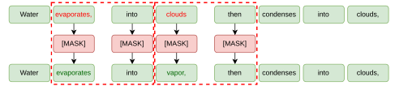

Diffusion language models refine multiple masked token positions in parallel. Many decoders fix the response length before generation: short windows can truncate answers, while long windows allocate unnecessary positions.
The research question
How can a frozen diffusion LM adapt response length, token blocks, and decoding order together?
As the response grows, newly appended tokens also need to be organized. Here, structure means contiguous token blocks, the order in which those blocks are decoded, and how their boundaries are repaired.
The method
From masked windows to decoded blocks
DyStruct repeats four stages as it extends a response. A window is a newly appended region of masked positions; a block is a contiguous subset of that region.
-
Window expansion
Adapt the next window’s length
A stable preceding window permits a larger expansion. Higher instability restricts the next window to fewer positions.
The decoder appends the chosen number of masks, creating the region that the next stage will partition.


The paper’s illustrative response grows through successive windows. Pink boxes mark newly masked regions. -
Block partitioning
Infer contiguous token blocks
A short diagnostic pass measures signals such as entropy and changes in token predictions.
Boundary evidence is combined with a Chinese Restaurant Process (CRP)–style prior: adjacent positions can continue the current block or begin a new one, without fixing the number of blocks in advance.

The new window is partitioned into blocks. The observations and prior guide the splits; these illustrated blocks are not manually supplied to the decoder. -
Context-aware scheduling
Use stable blocks as context
The decoder prioritizes blocks with lower instability and stronger neighboring decoded context. More unstable blocks receive additional refinement.
In this illustration, the first and third blocks are resolved before the middle block, providing context on both sides.
FirstThirdSecond
Decoded neighbors help constrain the remaining masked block. This is the paper’s schematic, not a live model replay. -
Boundary repair
Reconcile neighboring blocks
Independently decoded blocks can disagree at their interfaces. DyStruct remasks low-confidence tokens near each boundary and refines them using the neighboring decoded text.
The process repeats until an end-of-sequence token or the length cap is reached.

Local repair revisits boundary tokens while keeping positions outside the repair interval fixed.
Combine local observations with a structural prior
For a given window length, block partitioning combines evidence from the diagnostic pass with a prior over contiguous partitions. In simplified conditional notation:

The full framework also models window growth and block scheduling. See the paper for the complete factorization and staged inference procedure.
Experimental evidence
Gains across two diffusion backbones
We evaluate LLaDA-8B-Base and Dream-7B-Base on code generation, mathematical reasoning, and logical reasoning. Each comparison uses the same backbone with a different decoder.
LLaDA-8B-Base · BBH
+4.4 percentage points
44.9 Base to 49.3 DyStruct
Dream-7B-Base · HumanEval
+6.8 percentage points
40.2 Base to 47.0 DyStruct
| Backbone / decoder | HumanEval | MBPP | GSM8K | MATH | BBH |
|---|---|---|---|---|---|
| LLaDA-8B-Base | |||||
| Base | 32.3 | 39.8 | 70.3 | 30.5 | 44.9 |
| + DAEDAL | 33.5 | 40.2 | 70.8 | 31.2 | 43.7 |
| + DyStruct | 34.8 | 41.4 | 72.1 | 31.4 | 49.3 |
| Dream-7B-Base | |||||
| Base | 40.2 | 57.2 | 74.9 | 38.2 | 51.7 |
| + DAEDAL | 34.7 | 54.4 | 74.3 | 38.6 | 44.8 |
| + DyStruct | 47.0 | 59.8 | 75.1 | 38.8 | 52.5 |
Evaluation settings and uncertainty
HumanEval and MBPP report greedy pass@1; GSM8K and MATH use strict match; BBH uses exact match. The few-shot counts, in that order, are 0, 3, 5, 4, and 3.
The maximum generation length and base unmasking-iteration budget are both 256. DyStruct allocates refinement across adaptively sized blocks; a shared base budget does not establish matched total FLOPs. Experiments use a single NVIDIA H100 GPU.
The table shows point estimates. Standard errors are reproduced below from the paper; they are not confidence intervals or significance labels.
| Backbone / decoder | HumanEval | MBPP | GSM8K | MATH | BBH |
|---|---|---|---|---|---|
| LLaDA Base | 3.6 | 2.1 | 1.2 | 0.6 | 0.5 |
| LLaDA + DAEDAL | 3.7 | 2.1 | 1.2 | 0.6 | 0.5 |
| LLaDA + DyStruct | 3.7 | 2.2 | 1.2 | 0.6 | 0.5 |
| Dream Base | 2.7 | 2.2 | 1.1 | 0.6 | 0.5 |
| Dream + DAEDAL | 2.7 | 2.2 | 1.2 | 0.6 | 0.5 |
| Dream + DyStruct | 3.9 | 2.1 | 1.9 | 0.6 | 0.5 |
Scheduling and repair contribute to the gains
With LLaDA-8B-Base, replacing the scheduler with fixed left-to-right block order lowers MATH by 1.1 percentage points. Removing boundary repair lowers HumanEval by 1.9 percentage points.
| Configuration | HumanEval | MBPP | GSM8K | MATH | BBH |
|---|---|---|---|---|---|
| Full DyStruct | 34.8 | 41.4 | 72.1 | 31.4 | 49.3 |
| Fixed left-to-right block order | 33.5 | 41.2 | 71.8 | 30.3 | 49.3 |
| Without boundary repair | 32.9 | 40.8 | 70.5 | 31.2 | 49.1 |
| Without both | 32.9 | 41.0 | 69.7 | 31.0 | 49.1 |
A concrete boundary error
Repair a code expression using its context
The paper’s HumanEval example asks whether two entries in numbers have an absolute difference below a threshold. The surrounding code indexes the array with i and j:
def check_diff(numbers, threshold):
for i in range(len(numbers)):
for j in range(i + 1, len(numbers)):Before boundary repair
(x - y)The independently decoded expression uses variables that do not match the shown context.
After boundary repair
(numbers[i] - numbers[j])Local re-evaluation recovers an expression consistent with the surrounding array indices.
Qualitative trace excerpt from the paper. The snippets show the loop context and difference expression, not a complete executable function or a new baseline evaluation.
Evaluation scope
The evidence covers two diffusion backbones and five benchmarks under a 256-token output cap. The backbone weights remain frozen, while diagnostic coefficients are calibrated using validation trajectories with ground-truth sequences. These experiments do not establish unrestricted-length generation or performance under matched total FLOPs.
Cite DyStruct
@misc{sun2026dystruct,
title={DyStruct: Dynamically Structured Diffusion Language
Model Decoding via Bayesian Inference},
author={Bian Sun and Kevin Zhai and Mubarak Shah
and Zhenyi Wang},
year={2026},
eprint={2605.09820},
archivePrefix={arXiv},
primaryClass={cs.LG},
url={https://arxiv.org/abs/2605.09820}
}